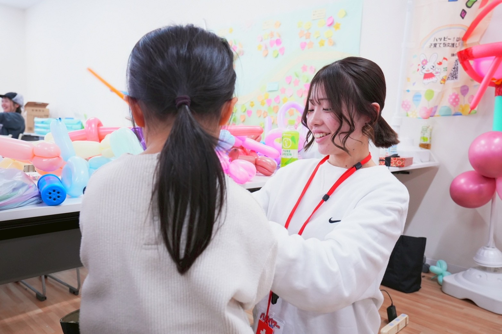
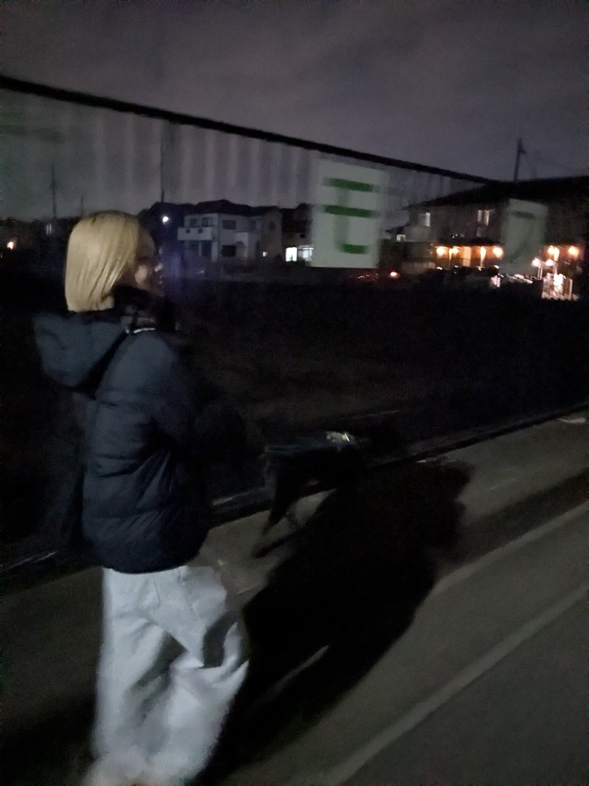

私たちについて
活動内容
居場所カフェ 花hanaは、不登校や登校しぶりのある学生を対象に、 安心して過ごせる居場所を提供する活動をしています。
不登校でなくても、「なんとなく学校に行きたくない」 「誰かに少し話を聞いてほしい」 そんなときにも使える場所です。
対面での居場所づくりだけでなく、 オンラインやメールでの相談も受け付けています。 専門家ではありませんが、自身の経験を活かし、 ひとりひとりに寄り添うことを大切にしています。

活動理念
「そのままで大丈夫な時間を」
学校に行けないことがあっても、 安心して過ごせる場所はあっていい。
がんばれない日があっても、 そのままで大丈夫だと思える時間があっていい。
花hanaは、みんなが安心できる場所へこちらから会いに行き、 その子のペースで人とつながれるきっかけをつくることを 大切にしています。
無理をせず、急がせず、 ひとりひとりの「今」を尊重する居場所であり続けます。
代表について
代表 石平 波凪花（いしだいら はなか）
代表自身も不登校を経験しました。
高校進学後、いじめや学校とのすれ違いが重なり、 徐々に登校が難しくなりました。 学校に戻った時期もありましたが、 心身の負担は大きく、最終的に転校を決意しました。
当時は、眠れない日が続いたり、 電車に乗ると吐き気に襲われたり、 体と心の両方が限界に近い状態でした。 のちに中等度のうつ病と診断されました。
それでも、「誰かが静かに話を聞いてくれていたら」 と思った経験が、この活動の原点になっています。
